2018年北京市中考物理试题 原卷解析
2018年北京市中考物理试卷
一、单项选择
1. 下列物品中，通常情况下属于导体的是（ ）
A. 塑料安全帽 B. 布手套 C. 橡胶鞋 D. 钢尺
【答案】D
【解析】A. B. C. 塑料安全帽、布手套、橡胶鞋在通常情况下，内部自由电荷很少，是绝缘体；
D. 通常的金属材料都是导体，其内部有大量的能够自由移动的电荷，所以钢尺是导体；
故选D。
点睛：重点是常见的导体和绝缘体，除了了解导体和绝缘体的以外，也要理解原因，导体能导电是因为导体中含有大量的能够自由移动的电荷，而绝缘体中自由电荷很少，不足以形成电流。
2. 如图所示的光现象中，由于光的反射形成的是（ ）
A. 手在屏幕上形成的手影
B. 鸟巢在水中形成的倒影
C. 人透过水球成的像
D. 勺柄好像在水面处折断
【答案】B
【解析】A. 手在屏幕上形成的手影，即影子，由光的直线传播形成；
B. 鸟巢在水中形成的倒影，是平面镜成像，由光的反射形成；
C. 人透过水球成的像，水球相当于一个凸透镜，是由于水球的折射作用，形成了一个倒立缩小的实像；
D. 勺柄好像在水面处折断，是由光从水中斜射入空气中时，折射角大于入射角而形成的；
故B选项由光的反射形成，符合题意。
点睛：重点是光的直线传播、反射、折射所形成的现象，身边有很多例子，是比较容易区分的，注意理论联系实际，多总结。
3. 下列用电器中，利用电流热效应工作的是（ ）
A. 电暖气 B. 计算器 C. 电视机 D. 笔记本电脑
【答案】A
【解析】利用电流热效应工作的用电器电能主要转化为内能。
A. 电暖气，工作时将电能转化为内能，利用了电流的热效应，故A符合题意；
B. 计算器，主要利用电流处理信息，没有利用电流的热效应，故B不符合题意；
C. 电视机，利用电流处理信息，将电能转化为光能和声音，没有利用电流的热效应，故C不符合题意；
D. 笔记本电脑，利用电流处理信息，将电能转化为光能和声音，没有利用电流的热效应，故D不符合题意；故选A。
4. 下列实例中，为了增大压强的是（ ）
A. 书包带做的较宽 B. 图钉帽做得面积较大
C. 大型平板车装有很多车轮 D. 石磨的磨盘做得很重
【答案】D
【解析】A. 书包带做的较宽，是在压力一定时，是通过增大受力面积的方法来减小压强的；
B. 图钉帽做得面积较大，是在压力一定时，是通过增大受力面积的方法来减小压强的；
C. 大型平板车装有很多车轮，是在压力一定时，是通过增大受力面积的方法来减小压强的；
D. 石磨的磨盘做得很重，是在受力面积一定时，通过增大压力的方法来增大压强的；
故D符合题意。
点睛：重点是增大和减小压强的方法，牢记影响压强大小的两个因素，可以通过增大压力或减小受力面积的方法来增大压强，反之减小压强。
5. 下列做法中符合安全用电要求的是（ ）
A. 用电器电线绝缘皮破损了仍继续使用
B. 在未断开电源的情况下更换灯泡
C. 在家庭电路中安装空气开关或保险丝
D. 在高压线附近放风筝
【答案】C
【解析】A. 用电器电线绝缘皮破损了仍继续使用，有触电的危险，且容易发生短路，故A错误；
B. 在未断开电源的情况下更换灯泡，人接触到火线会触电，不符合安全用电原则，故B错误；
C. 在家庭电路中安装空气开关或保险丝，在电流过大时，空气开关会跳闸自动切断电路，或保险丝熔断自动切断电路，符合安全用电原则，故C正确；
D. 在高压线附近放风筝，风筝容易缠绕在高压线上而发生危险，不符合安全用电原则，故D错误；
故选C。
点睛：重点是安全用电的常识，牢记安全用电中的四不，即不接触低压带电体，不靠近高压带电体，不弄湿用电器，不损坏绝缘层。
6. 下列实例中，为了减小摩擦的是（ ）
A. 足球守门员戴有防滑手套 B. 骑自行车刹车时用力捏闸
C. 运动鞋的底部制有凹凸不平的花纹 D. 给自行车的车轴加润滑油
【答案】D
【解析】A. 足球守门员戴有防滑手套，是在压力一定时，通过增大接触面粗糙程度的方法增大摩擦的；
B. 骑自行车刹车时用力捏闸，是在接触面一定时，通过增大压力的方法增大摩擦的；
C. 运动鞋的底部制有凹凸不平的花纹，是在压力一定时，通过增大接触面粗糙程度的方法增大摩擦的；
D. 给自行车的车轴加润滑油，可以将接触面分离，用光滑的油膜代替接触面，减小摩擦力；
故D是为了减小摩擦，符合题意。
点睛：重点是增大和减小摩擦力的方法，牢记影响滑动摩擦力的两个因素，即压力和接触面的粗糙程度，可以通过增大压力或增大接触面的粗糙程度来增大摩擦力，反之减小摩擦力，另外用滚动代替滑动可以大大减小摩擦力。
7. 下列实例中，属于做功改变物体内能的是（ ）
A. 锯木头时的锯条温度升高
B. 加入冰块的饮料温度降低
C. 倒入热牛奶的杯子温度升高
D. 放入冷水中的热鸡蛋温度降低
【答案】A
【解析】A锯木头时的锯条温度升高，机械能转化为内能，是通过做功的方法增加了物体的内能，故A符合题意； 加入冰块的饮料温度降低，饮料放出热量，冰块吸收热量，通过热传递的方式改变了内能，故B不符合题意；倒入热牛奶的杯子温度升高，牛奶放出热量，杯子吸收热量，通过热传递的方式改变了内能，故C不符合题意； 放入冷水中的热鸡蛋温度降低，鸡蛋放出热量，水吸收热量，通过热传递的方式改变了内能，故D不符合题意；故选A。
点睛：牢记改变物体内能的两种方式是解题的关键，即热传递和做功，两种方式对于内能的改变是等效的，两种方式很容易区分，做题不难。
8. 如图所示的物态变化实例中，由于液化形成的是（ ）
A.  立春时节冰化成的水
立春时节冰化成的水
B.  白露时节草叶上的露珠
白露时节草叶上的露珠
C.  大雪时节落在地上的雪
大雪时节落在地上的雪
D.  冬至时节房檐上的冰挂
冬至时节房檐上的冰挂
【答案】B
【解析】A. 立春时节冰化成的水，即固态变为液态的过程，是凝固现象，故A不符合题意；
B. 白露时节草叶上的露珠，是水蒸气遇冷液化形成的小水珠，故B符合题意；
C. 大雪时节落在地上的雪，雪是水蒸气遇冷凝华形成的，故C不符合题意；
D. 冬至时节房檐上的冰挂，是水凝固而变成冰，故D不符合题意；
故选B。
点睛：物质通常存在三种状态，物质由一种状态变为另一种状态的过程，叫物态变化，总共有六种变化过程，像这类的题目，只要记清楚物态变化过程即可正确解题。
9. 如图所示的电路中，电阻阻值R1＜R2．闭合开关S后，电阻R1、R2两端的电压分别为U1、U2，通过两个电阻的电流分别为I1、I2．下列判断中正确的是（ ）

A. I1=I2 B. I1＞I2 C. U1=U2 D. U1＞U2
【答案】A
【解析】如图电路，闭合开关S后，电阻R1、R2串联在电路中。
根据串联电路电流处处相等的特点可知，通过两电阻的电流相等，故A正确，B错误；
根据串联电路的分压特点，即： ，可见串联电路中电压与电阻成正比，因为R1＜R2，所以 U1<U2，故CD错误；
，可见串联电路中电压与电阻成正比，因为R1＜R2，所以 U1<U2，故CD错误；
故选A。
点睛：考查了串联电路的电流、电压特点，牢记串联电路的分压规律，即电压与电阻成正比，电阻越大，分得电压越多，是电路的基本特点，要能熟练应用。
10. 小军做凸透镜成像规律的实验时，将焦距为10cm的凸透镜固定在光具座上50cm刻度线处，光屏和点燃的蜡烛分别位于凸透镜两侧，蜡烛放置在35cm刻度线处，如图所示。移动光屏，直到在光屏上呈现烛焰清晰的像。下列说法中正确的是（ ）

A. 光屏上呈现的是烛焰的虚像 B. 光屏上呈现的是烛焰正立的像
C. 光屏上呈现的是烛焰放大的像 D. 该实验现象能说明照相机的成像特点
【答案】C
【解析】A. 光屏上能呈现烛焰的像，说明是实像，虚像不能成在光屏上，故A错误；
B. 凸透镜成实像时，都是倒立的，成虚像时是正立的，如图成的是实像，是倒立的，故B错误；
C. 由图知，物距位于一倍到二倍焦距之间，像距大于二倍焦距，成倒立放大的实像，故光屏上呈现的是烛焰放大的像，故C正确；
D. 该实验现象能说明投影机的成像特点，而照相机利用的是成缩小实像的规律，故D错误；
故选C。
点睛：凸透镜成像规律是常考试的内容，应牢记凸透镜的成像规律，有些同学总是记不住，要下点功夫，可以结合成像光路图进行练习、记忆。
11. 有两个额定电压相同的电热水壶甲和乙，甲的额定功率为1800W，乙的额定功率为1200W．两个电热水壶都正常工作时，下列说法中正确的是（ ）
A. 甲电热水壶两端的电压较高 B. 电流通过甲电热水壶做功较快
C. 通过两个电热水壶的电流相等 D. 相同时间内，两个电热水壶消耗的电能一样多
【答案】B
【解析】A. 因为两个电热水壶的额定电压相同，且两个电热水壶都正常工作，即在额定电压下工作，所以甲、乙电热水壶两端的电压相等，故A错误；
B. 都正常工作时，甲的额定功率大，所以电流通过甲电热水壶做功较快，故B正确；
C. 都正常工作时，甲的额定功率大，根据 ，通过甲电热水壶的电流大，故C错误；
，通过甲电热水壶的电流大，故C错误；
D. 都正常工作时，甲的额定功率大，根据 可知，相同时间内，甲电热水壶消耗的电能多，故D错误；
可知，相同时间内，甲电热水壶消耗的电能多，故D错误；
故选B。
点睛：要理解用电器在额定电压下工作时的功率才是额定功率，正常工作即代表在额定电压下工作，再者要理解功率是表示做功快慢的物理量，所以功率大即代表做功快。
12. 小海设计了一种测定油箱内油量的模拟装置，如图所示，其中电源两端电压保持不变，R0是定值电阻，R是滑动变阻器的电阻片，滑动变阻器的滑片P跟滑杆的一端连接，滑杆可以绕固定轴O转动，另一端固定着一个浮子。油箱中的油量减少时，浮子随油面下降，带动滑杆使变阻器的滑片P向上移动，从而引起电流表的示数发生变化。下列说法中正确的是（ ）

A. 电流表示数变小时，表明油箱中的油量减少
B. 电流表示数变小时，电阻R0两端电压变大
C. 当油箱中的油量减少时，电流表示数变大
D. 当油箱中的油量减少时，变阻器R连入电路的电阻变小
【答案】A
【解析】如图，定值电阻R0与滑动变阻器R串联在电路中，电流表测量电路中电流。
A. C. D 当油箱中的油量减少时，浮子下降，带动滑片上升，滑动变阻器接入电路的电阻变大，电路总电阻变大，根据 可知，电路中电流变小，所以电流表示数变小时，表明油箱中的油量减少，故A正确，CD错误；
可知，电路中电流变小，所以电流表示数变小时，表明油箱中的油量减少，故A正确，CD错误；
B. 电流表示数变小时，即通过R0的电流变小，根据 知，电阻R0两端电压变小，故B错误；
知，电阻R0两端电压变小，故B错误；
故选A。
点睛：考查了欧姆定律的应用，关键是电路的动态分析，当油量减少时，滑片上升，所以滑动变阻器接入电路电阻变大，电流变小，电阻R0两端电压变小。
13. 在如图所示实验中，将小铁球从斜面顶端由静止释放，观察到它在水平桌面上运动的轨迹如图甲中虚线OA所示。在OA方向的侧旁放一磁铁，再次将小铁球从斜面顶端由静止释放，观察到它在水平桌面上运动的轨迹如图乙中虚线OB所示。由上述实验现象可以得出的结论是（ ）

A. 小铁球在桌面上继续运动是由于受到向前的作用力
B. 磁铁对小铁球没有作用力
C. 力可以改变小铁球的运动方向
D. 力可以使小铁球发生形变
【答案】C
【解析】A. 小铁球在桌面上继续运动是因为小球具有惯性，故A错误；
B. 磁铁能够吸引铁质物品，所以磁铁对小铁球有吸引力，故B错误；
C. 在磁铁对小铁球的吸引力作用下，小球改变了运动方向，故可以说明力可以改变小铁球的运动方向，C正确；
D. 小铁球的运动方向发生了改变，但没有发生形变，所以不能说明力可以使小铁球发生形变，故D错误；
故选C。
点睛：重点是牢记力的两个作用效果，即力可以改变物体的形状；力可以改变物体的运动状态。
14. 中国科技馆有一个由小车和螺旋桨组成的装置，如图所示。小车在磁体间的相互作用下悬浮于水平平直轨道上。按下控制开关，小车左端的螺旋桨开始转动，小车由静止开始沿轨道向右运动，速度逐渐增大；一段时间后，小车右端的螺旋桨也开始转动，最终在两个螺旋桨转速的自动调节下，小车可以停在轨道上。下列说法中正确的是（ ）

A. 小车静止悬浮在轨道上时，只受到重力作用
B. 小车静止悬浮在轨道上时，受到竖直向上的磁力
C. 小车向右运动的过程中，所受合力一定为零
D. 小车速度增大的过程中，小车的机械能不变
【答案】B
【解析】A. 小车静止悬浮在轨道上时，是平衡状态，小车受到的重力与向上的磁场力是一对平衡力，如果只受重力，不会悬浮，故A错误；
B. 小车静止悬浮在轨道上时，受到的重力与向上的磁场力是一对平衡力，所以受到磁力的作用，故B正确；
C. 合力为零时会保持匀速直线运动，而小车向右运动的过程中，速度逐渐增大，所以不是平衡状态，合力一定不为零，故C错误；
D. 小车速度增大的过程中，动能增大；高度不变，重力势能不变，所以小车的机械能变大，故D错误；
故选B。
点睛：重点是平衡状态的判断，要牢记静止和匀速直线运动时物体一定受力平衡，即受到平衡力的作用。
15. 如图所示，盛有水的杯子静止在水平桌面上。杯子重1N，高9cm，底面积30cm2；杯内水重2N，水深6cm，水的密度为1.0×103kg/m3，g取10N/kg。下列选项中正确的是（ ）

A. 水对杯底的压强为900Pa B. 水对杯底的压力为2N
C. 水杯对桌面的压强为1000Pa D. 水杯对桌面的压力为2.8N
【答案】C
【解析】A. 根据 计算水对杯底的压强为：
计算水对杯底的压强为：
 ，故A错误；
，故A错误；
B. 根据 计算水对杯底的压力为：
计算水对杯底的压力为：
 ，故B错误；
，故B错误；
C. D. 杯子静止在水平桌面上时，对桌面的压力等于总重，即压力为：
 ，故D错误；
，故D错误；
水杯对桌面的压强为： ，故C正确；
，故C正确；
故选C。
二、多项选择题
16. 下列能源中，属于可再生能源的是（ ）
A. 石油 B. 风能 C. 煤炭 D. 太阳能
【答案】BD
【解析】石油、煤炭属于化石类能源，是经过漫长的地质过程而形成的，不可能在短期内再生，是不可再生能源；
风能、太阳能在自然界能够循环使用，取之不尽、用之不竭，属于可再生能源。
故选BD。
点睛：可再生能源包括太阳能、地热能、水力、风力、生物质能、波浪能、潮汐能、海洋温差能等。它们在自然界取之不尽或可以循环再生。
17. 下列说法中正确的是（ ）
A. 同种电荷相互排斥
B. 光是电磁波
C. 电荷的移动形成电流
D. 负电荷定向移动的方向就是电流的方向
【答案】AB
【解析】A. 同种电荷相互排斥，异种电荷相互吸引，故A正确；
B. 电磁波是个大家族，包括无线电波、红外线、可见光、紫外线、X射线、γ射线等，所以光是电磁波，故B正确；
C. 电荷的定向移动才能形成电流，故C错误；
D. 人们规定正电荷定向移动的方向为电流的方向，故D错误；
故选AB。
点睛：牢记正电荷定向移动的方向为电流方向，注意不能少了“定向”，因为没有电压时，自由电荷也会移动，只不过是杂乱的移动，不形成电流。
18. 下列说法中正确的是（ ）
A. 组成物质的分子之间，只存在引力，不存在斥力
B. 组成物质的大量分子无规则运动的剧烈程度与温度有关
C. 晶体在熔化过程中吸收热量，温度不变
D. 沿海地区通常比内陆地区昼夜温差小，原因之一是水的比热容比砂石的比热容大
【答案】BCD
【解析】A. 组成物质的分子之间，同时存在着相互作用的引力和斥力，故A错误；
B. 组成物质的大量分子无规则运动的剧烈程度与温度有关，温度越高，运动越剧烈，故B正确；
C. 晶体熔化的最显著特点是：吸收热量，温度不变，故C正确；
D. 沿海地区通常比内陆地区昼夜温差小，原因之一是水的比热容比砂石的比热容大，水在同样吸热或放热时，温度变化小，所以沿海地区温差小，故D正确；
故选BCD。
点睛：牢记水的比热容的物理意义及其在生产、生活中的应用，要注意总结水的比热容较大的应用实例，如作为热机的冷却物质，作为北方冬季的取暖物质，本题中解释海陆性质的不同等。
19. 如图展示了我国古代劳动人民的智慧成果，对其中所涉及的物理知识，下列说法中正确的是（ ）
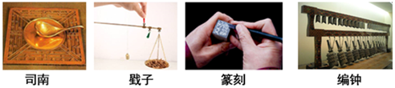
A. 司南利用地磁场对磁体有力的作用来指示南北
B. 戥子利用杠杆平衡来称量质量
C. 篆刻刀的刀口做得很锋利，是为了减小压强
D. 正在发声的编钟一定在振动
【答案】ABD
【解析】A. 指南针只所以会指南，是因为受到地磁场的作用，所以司南利用地磁场对磁体有力的作用来指示南北，说法正确，故A正确；
B. 戥子以及生活中使用的杆秤都是利用杠杆平衡条件来称量质量的，故B正确；
C. 篆刻刀的刀口做得很锋利，是在压力一定时，通过减小受力面积来增大压强的，故C错误；
D. 声音由振动产生，所以正在发声的编钟一定在振动，故D正确；
故选ABD。
点睛：要牢记地球是一个大磁体，指南针只所以会指南，就是因为受到地磁场的作用，且要注意了解地磁场的分布情况，地磁的南北极与地理的南北极相反，且不重合，有一个小的偏角，称为磁偏角。
20. 下列说法中正确的是（ ）
A. 电流周围存在磁场
B. 磁感线是真实存在的
C. 电动机能够把电能转化为机械能
D. 只要导体在磁场中做切割磁感线运动，就会产生感应电流
【答案】AC
【解析】A. 电流具有磁效应，即电流周围存在磁场，故A正确；
B. 磁感线是为了形象的描述磁场的分布特征而引入的，磁感线描述磁场是模型法的应用，磁感线并不是真实存在的，故B错误；
C. 电动机利用磁场对电流的作用力工作，能够把电能转化为机械能，故C正确；
D. 闭合电路的一部分导体在磁场中做切割磁感线运动时，才会产生感应电流，故D错误；
故选AC。
点睛：牢记产生感应电流应具备三个条件，一、闭合回路，即必须是通路，二、一部分导体，三、切割磁感线运动。
21. 小辉想探究电流通过电阻时产生的热量与哪些因素有关。他连接了如图所示的电路进行实验，其中两个完全相同的烧瓶内分别装有质量相等、初温均为25℃的煤油，阻值为5Ω和10Ω的电阻丝R1、R2．闭合开关一段时间后，记录此时两个温度计的示数。根据上述实验，下列说法中正确的是（ ）

A. 此实验探究的是热量与电阻的关系
B. 此实验探究的是热量与电流的关系
C. 此实验探究的是热量与时间的关系
D. 此实验中用温度计示数变化的大小反映产生热量的多少
【答案】AD
【解析】A. B. 如图两电阻串联在电路中，电流相等，而两电阻阻值不同，所以此实验探究的是电阻产生的热量与电阻的关系，故A正确，B错误；
C. 串联电路的通电时间一定是相同的，所以此实验不能探究热量与时间的关系，故C错误；
D. 此实验中电阻产生热量使煤油的温度升高，所以用温度计示数变化的大小反映产生热量的多少，是转换法的应用，故D正确；
故选AD。
点睛：研究电流通过电阻时产生的热量与哪些因素有关的实验中要体会控制变量法的应用，当一个结果受多个因素的影响时都使用此方法进行实验，实验时让一个因素变化，而其它因素都控制相等或相同即控制变量。
22. 如图所示为冬奥会的一些运动项目，关于这些项目中的情景，下列说法中正确的是（ ）

A. 跳台雪运动员在空中下落的过程中，重力势能不变
B. 短道速滑运动员在转弯滑行的过程中，运动状态不变
C. 冰壶运动员掷出去的冰壶能继续向前运动，是由于冰壶具有惯性
D. 冰球运动员用球杆推着冰球使其水平滑动的过程中，冰球所受重力没有做功
【答案】CD
【解析】A. 跳台雪运动员在空中下落的过程中，质量不变，高度降低，所以重力势能减小，故A错误；
B. 只有静止和匀速直线运动的物体运动状态是不变的，短道速滑运动员在转弯滑行的过程中，运动方向发生了变化，所以运动状态是改变的，故B错误；
C. 惯性是保持运动状态不变的性质，所以冰壶运动员掷出去的冰壶能继续向前运动，是由于冰壶具有惯性，故C正确；
D. 冰球运动员用球杆推着冰球使其水平滑动的过程中，冰球所受的重力方向竖直向下，冰球在水平方向运动，没有沿重力的方向运动，所以重力没有做功，故D正确；
故选CD。
点睛：重点理解运动状态不变的含义，静止和匀速直线运动时运动状态不变，即速度和方向都不能改变。
三、实验解答题
23. （1）如图1所示，体温计的示数为_______℃。
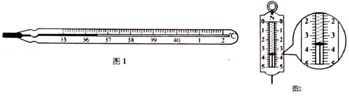
（2）如图2所示，弹簧到力计的示数为______N。
【答案】 (1). 36.5 (2). 3.6
【解析】（1）如图1体温计的量程为35℃-42℃，分度值为0.1℃；
图中示数为36.5℃；
（2）如图2，弹簧测力计的量程为5N，分度值为0.2N；
弹簧到力计的示数为3.6N。
点睛：不论何种仪器读数时，要先看清楚量程和分度值再读数，温度计的读数有时是负数，要特别注意。
24. 根据如图所示的电流方向，判断通电螺线管的A端是____极。（选填“N”或“S”）
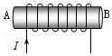
【答案】N
【解析】根据安培定则进行判断。
右手握住螺线管，四指弯曲指向电流的方向，则大母指的指向即为螺线管的磁场方向，即大母指所指的左端为N极。所以A端为N极，B端为S极。
点睛：安培定则应用时，要注意四指弯曲指向电流的方向，千万不要理解成线圈的绕向，有同学容易在这点混淆，有个简单的方法，即使用右手螺旋定则前先把电流方向标在线圈上。
25. 小华探究杠杆平衡条件时，使用的每个钩码的质量均相等，杠杆上相邻刻线间的距离相等。如图甲所示，为使杠杆在水平位置平衡，应将右端的平衡螺母向____（选填“左”或“右”）端调节。杠杆水平后，在杠杆上的A点悬挂了2个钩码，如图乙所示，为使杠杆保持水平平衡，应在B点悬挂____个钩码。
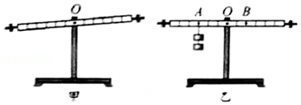
【答案】 右 3
【解析】如图甲所示，杠杆左端偏低，为使杠杆在水平位置平衡，应将右端的平衡螺母向右端调节。
杠杆水平后，在杠杆上的A点悬挂了2个钩码；
设每个钩码重为G，每格的长度为L，根据杠杆的平衡条件得：
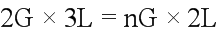
解得：
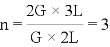
所以为使杠杆保持水平平衡，应在B点悬挂3个钩码。
点睛：重点是杠杆平衡条件的应用，要清楚杠杆的平衡条件应用时，两等式两边的长度单位一样即可，但求功的时候，单位必须为米。
26. 小光同学利用如图所示的装置及相同高度的蜡烛等器材探究平面成象的特点，其中平板透明玻璃与水平纸面垂直。
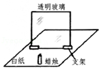
（1）将蜡烛放置在玻璃前某位置，蜡烛所成像的高度_____蜡烛的高度。（选填“小于”、“等于”或“大于）
（2）将蜡烛靠近玻璃时，蜡烛所成像的高度_____。（选填“变小”、“变大”或“不变”）
【答案】 (1). 相等 (2). 不变
【解析】平面镜成等大的虚像，且像的大小与物距的大水无关，即无论蜡烛离镜面多远，成像的大小都是不变的。
（1）如图将蜡烛放置在玻璃前某位置，因为平面镜成等大的虚像，所以蜡烛所成像的高度等于蜡烛的高度。
（2）将蜡烛靠近玻璃时，因为像的大小与物距的大水无关，所以蜡烛所成像的高度不变。
点睛：重点是平面镜成像特征的掌握，牢记平面镜成等大的虚像，像与物到镜面的距离相等，像与物的连线与镜面垂直，即像和物关于平面镜对称。
27. 实验桌上有两块完全相同的玻璃板，其上分别滴有等量的、表面积相同的水，小明加热其中一块玻璃板，如图所示，观察两板变干的快慢。小明探究的问是：水蒸发的快慢与____是否有关。
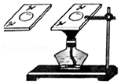
【答案】温度
【解析】根据题意，有两块完全相同的玻璃板，其上分别滴有等量的、表面积相同的水；
加热其中一块玻璃板，即除了温度不同外，水的质量、表面积，空气流速都是相同的，所以小明探究的问是：水蒸发的快慢与温度是否有关。
点睛：牢记影响蒸发快慢的因素，当温度越高、表面积越大、表面的空气流速越快时，蒸发越快，反之蒸发越慢。
28. 下面是小阳同学测量食用油密度的主要实验步骤：
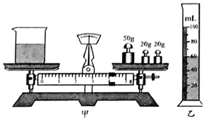
①用天平测出烧杯和食用油的总质量m1。
②将烧杯中的部分食用油倒入量筒中，并测出量筒中食用油的体积V。
③测出烧杯和杯内剩余食用油的总质量m2。
④计算出食用油的密度ρ油。
请根据以上实验完成下列问题：
（1）画出本次实验数据的记录表格__________。
（2）实验中m1、V的测量数值分别如图甲、乙所示，测出m2=40g；则食用油的体积V=______cm3，食用油的密度ρ油=__________g/cm3
【答案】(1).
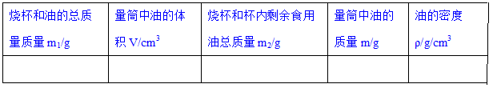
(2). 60 0.9【解析】（1）实验数据的记录表格应包括：食用油的总质量m1、食用油的体积V、剩余食用油的总质量m2、食用油的质量m、食用油的密度ρ油，所以表格为：
（2）如图实验中实验中食用油的总质量为：
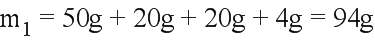
；如图乙所示，量筒中油的体积为：
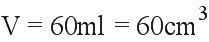
；测出m2=40g，则油的质量为：
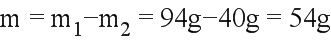
食用油的密度为：
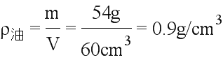
。点睛：测量液体密度的实验，注意实验中的细节问题，如天平的使用、读数，量筒的使用读数，都是常考的内容，注意熟练掌握。
29. 小阳为测量额定电压为2.5V的小灯泡在不同电压下的电功率及观察小灯泡的发光情况，连接了如图所示的电路。
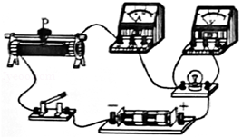
（1）闭合开关前，滑动变阻器的滑片P应放置在_______端。（选填“左”或“右”）
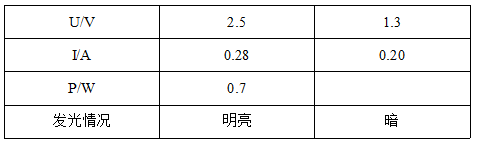
（2）小阳的实验记录如上表所示，则小灯泡两端电压U=1.3V时的电功率P=_____W。
（3）由上表的实验记录你还能得到的结论：_______________________。（写出一条即可）
（4）利用如图所示实验电路还可以进行的实验有：_________________。（写出一个即可）
【答案】 (1). 右 (2). 0.26 (3). 灯的电压越大，灯的电阻越大 (4). 测灯的电阻实验
【解析】（1）根据保护电路的原则，闭合开关前，滑动变阻器的滑片P应放置在阻值最大端，如图中滑片在右端电阻最大，所以应使滑片在右端。
（2）根据小阳的实验记录，小灯泡两端电压U=1.3V时，电流为0.20A，所以此时电功率为：
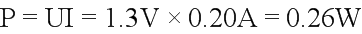
。（3）由上表的实验记录分析：
根据欧姆定律，由
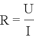
计算可知，两次实验的电阻大小分别为8.93Ω和6.5Ω，所以还能得到的结论：灯的电压越大，灯的电阻越大；（4）利用伏安法测量电阻的实验与本实验的器材相同，测量的物理量也相同，所以利用如图所示实验电路还可以进行测灯的电阻实验。
点睛：重点是测量小灯泡电功率的实验，注意滑动变阻器应一上一下接入电路，且闭合开关前滑片应调整到阻值最大端，且要明白测量功率与测量电阻的两实验器材和所要测量的物理是相同的，只是实验目的不同。
30. 为了验证“浸在水中的物体所受浮力大小跟物体排开水的体积有关”，小明选用如图所示的圆柱体A（ρA＞ρ水）、弹簧测力计和装有适量水的烧杯进行实验。
（1）以下是他的部分实验步骤，请你帮他补充完整：
①将圆柱体A悬挂在弹簧测力计下，静止时记录弹簧测力计的示数为F1。
②将圆柱体A下部的一格浸入水中，圆柱体不接触容器，静止时记录弹簧测力计的示数为F2。
③____________________________________________________，静止时记录弹簧测力计的示数为F3。
（2）由F1﹣F2_____F1﹣F3（选填”=“或“≠”），可以验证“浸在水中的物体所受浮力大小跟物体排开水的体积有关”。
【答案】 (1). 将圆柱体A下部的两个格浸入水中，圆柱体不接触容器 (2). ≠
【解析】（1）①将圆柱体A悬挂在弹簧测力计下，静止时记录弹簧测力计的示数为F1，即为圆柱体的重；
②将圆柱体A下部的一格浸入水中，圆柱体不接触容器，静止时记录弹簧测力计的示数为F2。
③将圆柱体A下部的两格浸入水中，圆柱体不接触容器，静止时记录弹簧测力计的示数为F3，②、③两步骤圆柱体浸入水中的体积不同，即排开水的体积不同。
（2）根据称重法测量浮力的原理知，一格浸入水中时受到的浮力为：
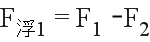
；两个格浸入水中时受到的浮力为：；
两次排开水的体积不同，所以若
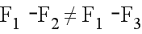
，可以验证“浸在水中的物体所受浮力大小跟物体排开水的体积有关”。点睛：理解称重法测浮力的原理，实质为三个力平衡，向上的力为：浮力、测力计的拉力；向下的力为重力。所以要注意实验步骤中必须指明“圆柱体不接触容器”。
31. 如图所示，将一个小球浸没在水中由静止释放，请根据小球的受力情况分析其可能出现的运动情况。（可画受力示意图辅助说明）
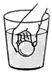
【答案】
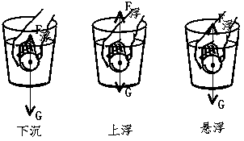
【解析】根据小球受到的重力与浮力的关系决断小球的运动状态。
当浮力小于重力时，合力的方向向下，小球下沉，即向下运动，如左图；
当浮力等于重力时，二力平衡，合力为零，小球保持静止，处于悬浮状态，如右图；
当浮力大于重力时，合力的方向向上，小球上浮，即向上运动，如中间图。
点睛：根据重力和浮力的大小关系，求得合力，结合运动和力的关系可分析运动状态，这也是我们常用到的浮沉条件之一。
四、科普阅读题
32. 请阅读《物理实验中的图象法》回答问题。
物理实验中的图象法
物理实验中的图象法是一种整理、分析数据的有效方法，图象中的图线可直观、简洁地显示出因变量随着自变量变换的趋势或规律。如果想要将物理实数据绘制成图象，可以按照下面的步骤来进行。
第一步，建立坐标轴、标注物理量和设定分度。首先建立坐标轴，通常用横轴代表自变量，纵轴代表因变量，在坐标轴上分别标注自变量和因变量的名称及单位；然后，设定坐标分度值。为了使绘制的图线比较均匀地分布在整幅坐标纸上，而不要偏在一角或一边，坐标分度值可以不从零开始。在一组数据中，自变量与因变量均有最低值和最高值，分度时，可用低于最低值的某一整数值作起点，高于最高值的某一整数值作终点。
第二步，根据数据描点。描点时根据数据在坐标纸上力求精准地画出对应的点。
第三步，绘制图线。绘制图线时不要把数据点逐点连接成折线，而应依据数据点的整体分布趋势，描绘出一条直线或光滑曲线，让尽可能多的点在图线上，或让数据点比较均匀地分布在图线两旁，这样绘制出的图线比图上的任何一个数据点更适合作为进行分析预测的依据。
倒如，小宇记录了自己沿直线步行过程中的时间及所对应的路程，图1中的黑点是他根据记录的数据在坐标纸上描出的数据点，利用这些数据点绘制出了图1中的直线。利用这条直线可以清楚地看出小宇步行的过程近似为匀速运动，还可以利用图线上的点计算出小宇步行过程中的速度，进而用速度预测出他在某一段时间内步行的路程。
请根据上述材料，回答下列问题：
（1）根据图1所示的图象，预测小宇步行10s的路程为_____m。
（2）下表是某同学记录的物体温度随时间变化的实验数据。
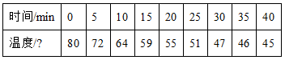
①若要绘制上述物体的温度随时间变化的图象，应选择图2中____图更合理。（选填“甲”或“乙”）
②请在你选择的图中描出第20min时的温度数据点，并绘制出本次实验中物体温度随时间变化的图线_____。
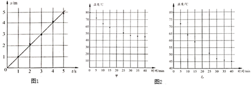
【答案】 (1). 10 (2). 乙
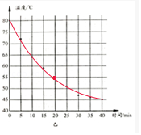
【解析】（1）由图1知路程和时间成正比，说明做匀速直线运动；
当路程为5m时，时间为5s，
所以小宇的速度为：
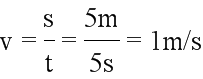
；小宇步行10s经过的路程为：
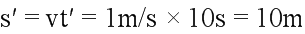
；（2）①由表格数据知温度的最高温度为80℃，最低温度为45℃；
为了能够更准确的反映物体温度随时间变化规律，纵坐标需要从低于最低温度的40℃开始即可，故图2的乙更合理；
②由表格数据知第20min时的温度为55℃，描出该点；
根据文中描述的连接图像的方法，用光滑的曲线连接温度最高和最低点，且经过20min时的温度点，得到图象，如图所示：
点睛：根据文中内容可知：图线可直观、简洁地显示出因变量随着自变量变换的趋势或规律，所以图像法是一种很重要的研究和显示物理规律的方法，很多的物理题中都有图像，要多练习，能从图像熟练获得我们解题所需的有用信息。
五、计算题
33. 如图所示，电源两端电压U为9V并保持不变，电阻R1阻值为10Ω．闭合开关S后，电流表A的示数I为1.2A．求：
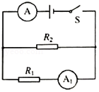
（1）电流表A1的示数I1；
（2）电阻R2的阻值。
【答案】（1）0.9A； （2）30Ω。
【解析】如图电路，两电阻并联，电流表A1测量R1的电流，电流表A位于干路，测量干路电流，电源电压为9V。
（1）并联电路的各支路电压相等，可得：
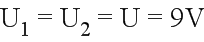
；根据欧姆定律得，通过R1的电流，即电流表A1的示数为：
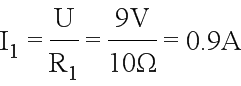
；（2）根据并联电路中干路电流等于各支路电流之和，得通过电阻R2的电流为：
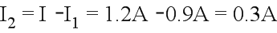
，根据可得R2的阻值为：
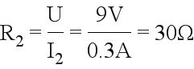
。点睛：重点是欧姆定律的应用和并联电路的电压与电流特点，是电路的最基本特点，要能熟练的应用，注意代入公式时导体的电流、电压、电阻要对应准确，有些同学不够认真，会张冠李戴而出现错误。
34. 如图是用动滑轮提升货物A的示意图。在竖直向上的拉力F的作用下，使重450N的货物A在50s的时间里，匀速竖直上升了10m。在这个过程中，拉力F做的功为5000J．求：
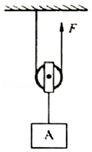
（1）有用功W有；
（2）拉力F的功率P；
（3）动滑轮的机械效率η。
【答案】（1）4500J；（2）100W；（3）90%。
【解析】（1）有用功即提升重物所做的功，所以有用功为：
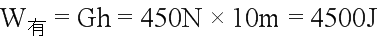
；（2）已知拉力F做的功为5000J，所用时间为50s，所以拉力做功的功率为：
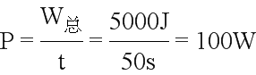
；（3）有用功与总功的比叫机械效率，所以动滑轮的机械效率为：
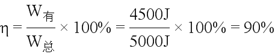
。点睛：涉及机械效率的问题时，关键是要清楚总功、有用功、额外功都在哪，有时要特别清楚额外功是对谁做的功，弄清楚这些功后，求效率和功率就显得简单了。